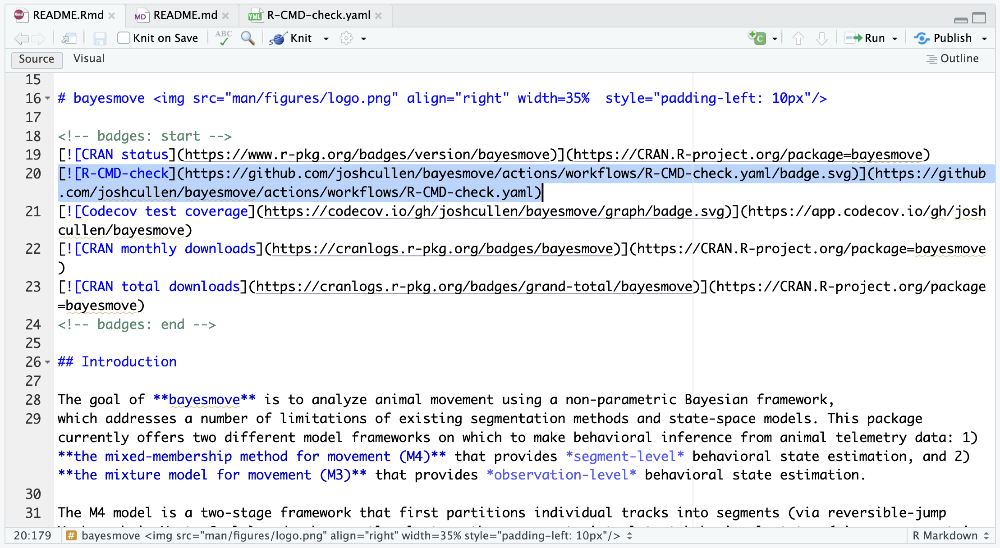
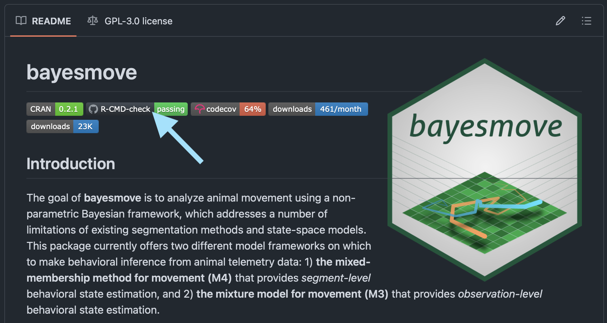
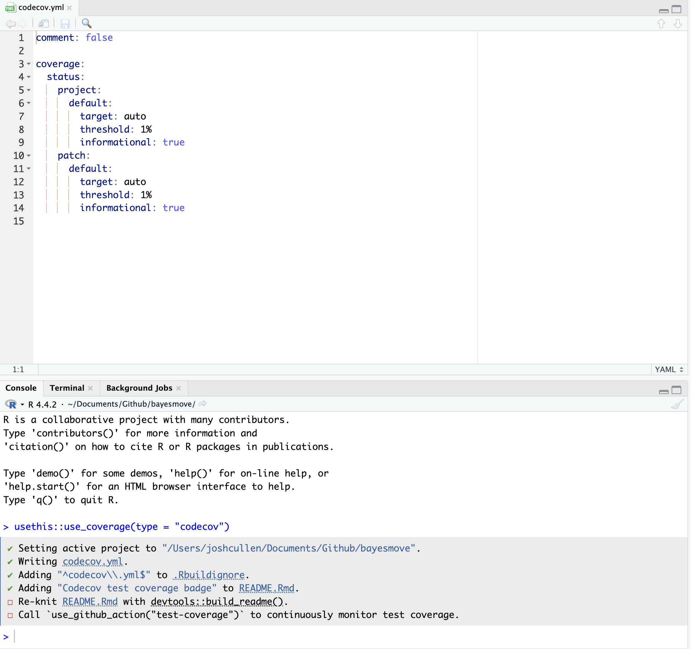
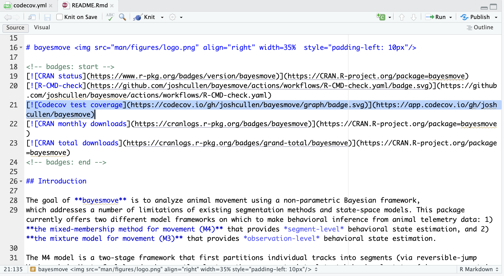
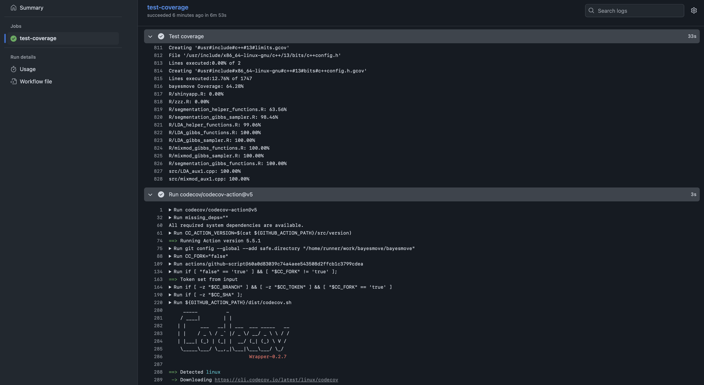
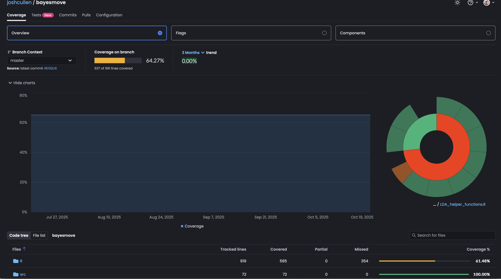

Check and test R packages (for devs)
1 Background
While much of these workshop materials have demonstrated how GitHub Actions can be used within workflows for scientific research (particularly for marine science), arguably the most common use is the continuous integration/continuous deployment (CI/CD) of software. This typically involves the development of software (such as functions within an R package), where changes to this code base is expected to occur over time. During this process, it’s important that changes to code don’t break the existing code that you or others may be using.
In this section, we will cover how GitHub Actions can be used for R package development via CI/CD as well as checks typically required for a CRAN submission. This section will not cover how to create an R package, but a comprehensive e-book and simple guide are useful references on this topic.
2 Helpful functions from usethis
Assuming you’ve already created the minimal files and folders needed for a R package (e.g., DESCRIPTION, NAMESPACE, man/, R/, data/, tests/), we can leverage some helper functions from the usethis R package to do much of the work for us when automating CI/CD and CRAN checks. This also means you should hopefully have your GitHub account configured through usethis; if not, refer to this page.
2.1 use_github_action()
One of the most helpful purposes of using GitHub Actions for software development is to be able to perform checks on a wide range of operating systems and software versions. When R package developers want to submit to CRAN, this is a required step before the review process can move forward. By leveraging a pre-made action (r-lib/actions/check-r-package@v2) for running R CMD Check in the cloud on multiple operating systems with different versions of R, we can streamline this process and ensure robust software prior to release.
To do this we will use the following single line of code to set things up for us:
usethis::use_github_action(name = "check-standard")By default, this should create a GitHub Action workflow named R-CMD-check.yaml that includes all the steps we should need. It should also create and add a R-CMD-check badge to your README file that shows it’s current status after the latest run on GitHub Actions. If not, please see this README.Rmd file from the bayesmove package as a reference. Below is an example of what this should look like:

R-CMD-check badge in the README.Rmd file should look like (highlighted code).
Here is an example of the workflow file this function created to check our R package:
R-CMD-check.yaml
on:
push:
branches: [main, master]
pull_request:
name: R-CMD-check.yaml
permissions: read-all
jobs:
R-CMD-check:
1 runs-on: ${{ matrix.config.os }}
2 name: ${{ matrix.config.os }} (${{ matrix.config.r }})
strategy:
fail-fast: false
3 matrix:
config:
4 - {os: macos-latest, r: 'release'}
- {os: windows-latest, r: 'release'}
- {os: ubuntu-latest, r: 'devel', http-user-agent: 'release'}
- {os: ubuntu-latest, r: 'release'}
- {os: ubuntu-latest, r: 'oldrel-1'}
env:
GITHUB_PAT: ${{ secrets.GITHUB_TOKEN }}
5 R_KEEP_PKG_SOURCE: yes
steps:
- uses: actions/checkout@v4
- uses: r-lib/actions/setup-pandoc@v2
- uses: r-lib/actions/setup-r@v2
with:
6 r-version: ${{ matrix.config.r }}
http-user-agent: ${{ matrix.config.http-user-agent }}
use-public-rspm: true
- uses: r-lib/actions/setup-r-dependencies@v2
with:
extra-packages: any::rcmdcheck
needs: check
7 - uses: r-lib/actions/check-r-package@v2
with:
upload-snapshots: true
build_args: 'c("--no-manual","--compact-vignettes=gs+qpdf")'- 1
-
Instead of listing only a single
runner, we can use a matrix build to use different combinations of operating systems and R versions - 2
-
While
R-CMD-checkis the name used for thejob, there are multiple jobs being run under this from the matrix build. Therefore, this argument provides the name for each of these based on the operating system and R version. - 3
- Setup to define the matrix build
- 4
- Example showing how to specify one component of matrix build
- 5
-
An environment variable telling the
check-r-package@v2action to use the source version of the package, not any binary files that might be available on CRAN - 6
- Listing the R version based on the matrix builds that were specified earlier
- 7
-
The
actionfor running theR CMD checkcommand and associated tests via GitHub Actions
Once the workflow has finished running, you should see an updated R-CMD-check badge on your README for your GitHub repo:

bayesmove README on GitHub repo, where the light blue arrow points to R-CMD-check badge after running check on GitHub Actions.
2.2 use_coverage()
The use_coverage() function sets up the necessary files to assess the code coverage for your package. Code coverage is a metric that evaluates the percentage of your code base that has unit tests that check the functions written for the R package. There are many different types of unit tests that may be written to evaluate your code base, for which the testthat R package is one of the most popular for doing so.
Once you have written some unit tests (stored in the tests/ folder of your package directory), we can run the use_coverage() function to set up different parts of our directory to incorporate code coverage assessment. This includes:
- Creating a
codecov.ymlfile that defines some global settings - Adding a test coverage badge to your package
README.Rmdfile - Prompts for updating the
README.mdfile and creating a GitHub Actions workflow to automate code coverage evaluation

use_coverage() function.

These screenshots above show how this looks in the RStudio IDE when setting up code coverage. If we also run the usethis::use_github_action("test-coverage") function, we can generate a GitHub Actions YAML to automate this process for us. By default, the created workflow only runs on push or pull_request (since this is when expected changes to code are made), but this can be edited as needed (such as including a workflow_dispatch event). However, we generally shouldn’t need to change anything to this test-coverage.yml file (shown below).
test-coverage.yml
# Workflow derived from https://github.com/r-lib/actions/tree/v2/examples
# Need help debugging build failures? Start at https://github.com/r-lib/actions#where-to-find-help
on:
push:
branches: [main, master]
pull_request:
name: test-coverage.yaml
permissions: read-all
jobs:
test-coverage:
runs-on: ubuntu-latest
env:
1 GITHUB_PAT: ${{ secrets.GITHUB_TOKEN }}
steps:
- uses: actions/checkout@v4
- uses: r-lib/actions/setup-r@v2
with:
use-public-rspm: true
- uses: r-lib/actions/setup-r-dependencies@v2
with:
extra-packages: any::covr, any::xml2
needs: coverage
- name: Test coverage
run: |
cov <- covr::package_coverage(
quiet = FALSE,
clean = FALSE,
install_path = file.path(normalizePath(Sys.getenv("RUNNER_TEMP"), winslash = "/"), "package")
)
print(cov)
covr::to_cobertura(cov)
shell: Rscript {0}
- uses: codecov/codecov-action@v5
with:
# Fail if error if not on PR, or if on PR and token is given
fail_ci_if_error: ${{ github.event_name != 'pull_request' || secrets.CODECOV_TOKEN }}
files: ./cobertura.xml
plugins: noop
disable_search: true
2 token: ${{ secrets.CODECOV_TOKEN }}
- name: Show testthat output
if: always()
run: |
## --------------------------------------------------------------------
find '${{ runner.temp }}/package' -name 'testthat.Rout*' -exec cat '{}' \; || true
shell: bash
- name: Upload test results
if: failure()
uses: actions/upload-artifact@v4
with:
name: coverage-test-failures
path: ${{ runner.temp }}/package- 1
- Needs GitHub PAT from your account
- 2
- Needs Codecov token created for your account on https://codecov.io
As is shown in the test-coverage.yml file, a token from your account on Codecov (associated with your GitHub repo) is needed. More information on creating this token can be found from this Quick Start guide and this tutorial for GitHub integration.
Now that we have the GitHub Actions workflow file created and our tokens made available as secrets, we can push some changes to the package directory and test it out. For example, screenshots are shown below of what the live log looks like while the code coverage tests are being run, as well as what the results look like on the Codecov website for your repo.

bayesmove. The results show how code coverage varies across files in the R/ and src/ folders storing functions.

bayesmove on Codecov website. The results also show how code coverage has changed over time as the package has been updated.
With automated code coverage in place, you and the users of your R package have a better sense of the quality assurance of your code with respect to unit testing across the different functions you’ve written. While useful, this step isn’t necessary to prepare an R package for submission to CRAN or for wider use and installation from GitHub.
3 Takeaways
With these CI/CD workflows for R package development, we can now more robustly test R packages prior to a new release or a CRAN submission. This includes running a standard check of the R package, as well as evaluating code coverage based on the unit tests written for the included functions of the package. If desired, developers can adjust these auto-generated YAML files for each workflow to suit their needs. While not covered here, there are other options for GitHub Actions workflows that can be generated from the use_github_actions() function, such as the automated building and deployment of a pkgdown website associated with the R package (such as for bayesmove).